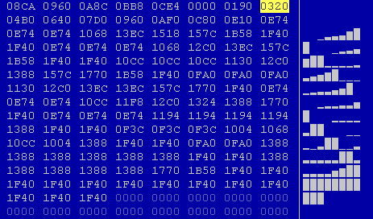
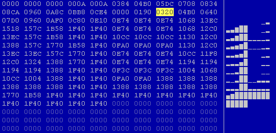
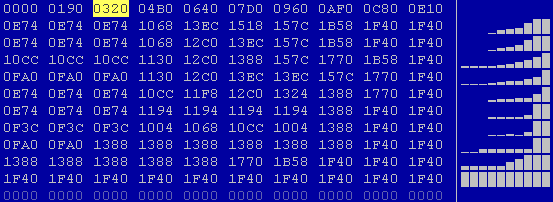
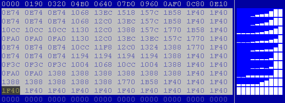

|
Manually find maps (Text mode) |

  
|
|
Manually find maps (Text mode) |
|
It is not easy and requires a lot of skill to manually find maps. First you should start with the view mode that you like best. For this click on the tabs “Text > 2d > 3d” on the lower border of the screen or use the hotkey “T” and “Shift+T”.
This section describes the manual search for maps in text mode. A corresponding description for the 2d mode is in the following section.
Now choose the view parameters. Make a doubleclick on the window and choose the “Values” (8 Bit, 16 Bit, ...). New ECU’s often use 16-Bit Data. Motorola Processors use “HiLo” Notation and Intel Processors use “LoHi”. (WinOLS automatically recognizes the processor manufacturer. You can see it the in the project properties. Choose “Project > Properties: Project“.)
Now scroll through the file. Use the mouse (mouse wheel or scroll bar) or the keys. A few tips:
| · | If the numbers a pale, then this area was recognized as program code by WinOLS. You should ignore this area. Normally you won’t find maps here and changes might easily result a crash in the car’s software. Empty areas are also displayed and are equally uninteresting. |
| · | Use the overview window (Menu item “Window > Overview”) to get a rough outline of the project. You can move and resize this window, just like the preview window. You can also tell this window to “roll up” when it is not active by clicking the button left of X button. |
If you’ve found something that could be a map, the first thing you should do is to adapt the view settings for this map. You can do this in all view modes, but it is easiest the text mode. Start with the number of columns. The maps often have “jumps” which represent a new line in the map. Change the number of columns in such a way, that all jumps are in the same columns. You can change the number of columns with the hotkey “M” and “W”. In the viewmode “Text” you can also change it by clicking and on the single vertical line and dragging it.
 Image: Map before changing number of columns |
 Image: Map after changing number of columns |
Now you can probably recognize a bit of the maps. The next thing that you should do is to move the start address of the map so that it will start on the left of the hexdump. For this use the menu item “View > Move origin left” And “View > Move origin right”. (Hotkeys Ctrl + Cursor left or right.) If you’re finished with this, select the map.
(Tip: If the bar display doesn’t contain anything useful, you should optimize the value range for your data. If you’ve selected the map, choose “View > Optimize value range” or press Ctrl+B. WinOLS will automatically be configured in such a way that the data used in the selection optimally uses the heights available for the bars.)
 Image: Map with the right start |
 Image: Marked map |
If you’ve activated the preview window, you can now see a 3d preview of your selection. Use the menu item “Selection > Selection -> Map” (Hotkey “K”) to create a map from your selection. A new window will open and you can edit your map.
But first, a few alternatives for entering maps:
| · | The assistant “Support map selection” can help you. Activate it with the menu item “View > Support map selection“. At the beginning nothing will happen (except it you already had a selection active while doing this. In this case the assistant will be applied without activating it permanently). If you now create a selection with your mouse, the assistant will try to optimize it. It will perform the steps that we described above (Number of columns, Start, ...) automatically. But you should always be careful not to select to any data that does not belong to the map. |
| · | The assistant works perfectly together with the “Map Selection”. You may need to activate this by selection the menu item “View > Symbol bars > Frame: Map Selection”. Whenever you now create a rectangular selection, you can change it with the new symbol bar afterwards. You can change the beginning in X or Y direction or change the number rows or columns. |